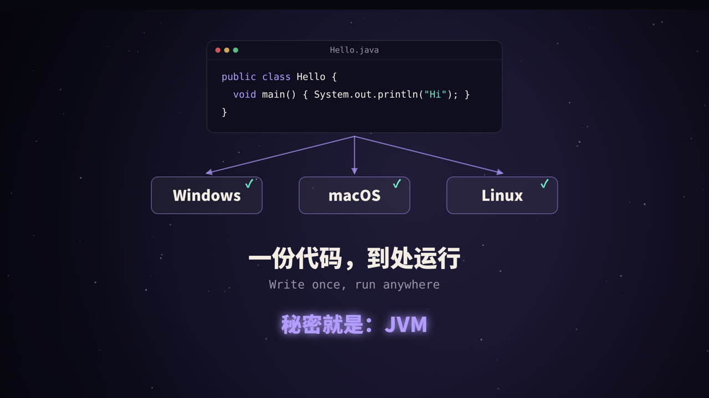
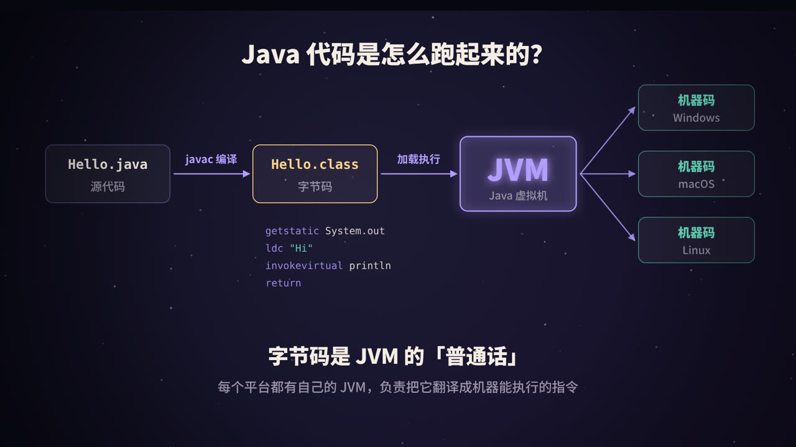
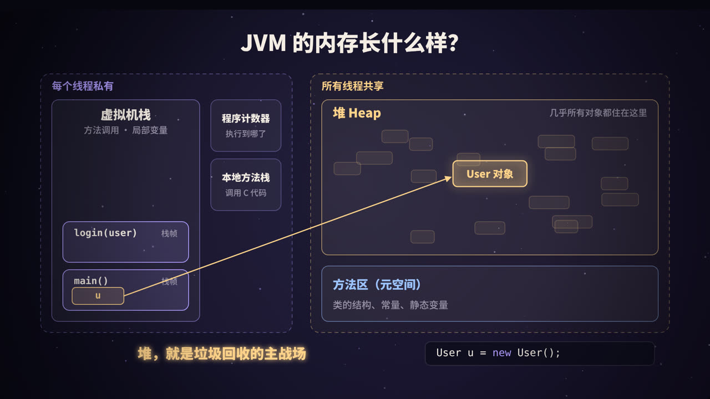
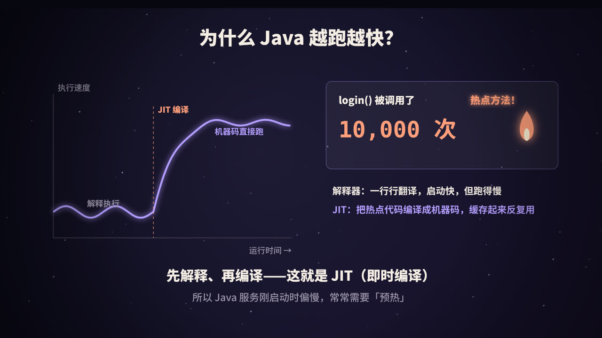

一份代码，到处运行
Java 诞生时有一句著名的口号：Write once, run anywhere（一次编写，到处运行）。同一个程序，不用改一行代码，就能跑在 Windows、macOS 和 Linux 上。
做到这一点的关键，是在程序和操作系统之间加了一层：JVM（Java Virtual Machine，Java 虚拟机）。你可以把 JVM 理解为三个角色：
| 角色 | 负责什么 |
|---|---|
| 翻译官 | 把与平台无关的字节码，翻译成当前机器能执行的指令 |
| 内存管家 | 分配内存，并自动回收不再使用的对象 |
| 加速器 | 找出频繁执行的热点代码，编译成机器码，越跑越快 |
从源代码到机器码

两步走：先编译，再执行
- 编译：
javac把Hello.java编译成Hello.class。.class文件里装的不是机器码，而是字节码（bytecode），一种为 JVM 设计的中间指令。 - 执行：
java Hello启动 JVM，JVM 加载字节码，再通过解释或编译的方式，转成当前 CPU 能执行的机器码。
每个平台都有自己的 JVM 实现，但它们都能读懂同一套字节码。所以字节码就像 JVM 世界里的「普通话」。
亲眼看看字节码
用 JDK 自带的 javap 工具，可以反汇编出字节码：
public class Hello {
public static void main(String[] args) {
System.out.println("Hi");
}
}
$ javac Hello.java && javap -c Hello
public static void main(java.lang.String[]);
Code:
0: getstatic #7 // Field java/lang/System.out:Ljava/io/PrintStream;
3: ldc #13 // String Hi
5: invokevirtual #15 // Method java/io/PrintStream.println:(Ljava/lang/String;)V
8: return
这四条指令的意思是：取出静态字段 System.out，把字符串 "Hi" 压入操作数栈，调用 println 方法，然后返回。（常量池编号 #7 等在不同 JDK 版本下可能不同。）
不只是 Java
JVM 只认字节码，不关心字节码是从哪种语言编译来的。所以 Kotlin、Scala、Groovy、Clojure 等语言也都运行在 JVM 上，并且可以直接调用 Java 的类库。
常见的 JVM 实现有 OpenJDK 自带的 HotSpot（使用最广）、Eclipse OpenJ9，以及 GraalVM 等。下文的细节默认以 HotSpot 为准。
类加载：字节码是怎么进入 JVM 的
一个类从 .class 文件变成 JVM 里可以使用的类型，要经过几个阶段：
- 加载：找到
.class文件，读入二进制数据，在方法区生成这个类的结构； - 验证：检查字节码格式和语义是否合法，防止恶意或损坏的代码；
- 准备：为类的静态变量分配内存，并设置默认零值；
- 解析：把常量池中的符号引用替换为直接引用；
- 初始化：执行静态变量的赋值语句和
static {}代码块。
其中验证、准备、解析三步合称链接。
双亲委派模型
类由类加载器负责加载。JDK 9 以后主要有三层：
为什么要这样设计？ 最主要的原因是安全和唯一性。比如你在自己的项目里写了一个 java.lang.String，因为请求会先交给启动类加载器，最终加载的永远是 JDK 里真正的 String，你的「冒牌货」不会生效。核心类库因此不会被随意篡改，同一个类也不会被重复加载。
JVM 的内存长什么样

JVM 规范把运行时的内存划分为几个区域，按「是否被线程共享」可以分为两类。
每个线程私有
| 区域 | 存放什么 | 可能出现的错误 |
|---|---|---|
| 程序计数器 | 当前线程执行到哪一条字节码 | 唯一不会内存溢出的区域 |
| 虚拟机栈 | 每调用一个方法，就压入一个栈帧，里面有局部变量表、操作数栈、返回地址等；方法返回时弹出 | 递归太深：StackOverflowError |
| 本地方法栈 | 为 native 方法（通常是 C/C++ 实现）服务 |
同上 |
所有线程共享
| 区域 | 存放什么 | 可能出现的错误 |
|---|---|---|
| 堆（Heap） | 几乎所有的对象实例和数组 | OutOfMemoryError: Java heap space |
| 方法区 | 类的结构信息、运行时常量池、静态变量、JIT 编译后的代码等 | OutOfMemoryError: Metaspace |
JDK 8 的一个重要变化：方法区以前在 HotSpot 中用「永久代」（PermGen）实现，大小固定，容易溢出。从 JDK 8 开始改为元空间（Metaspace），使用本地内存，默认可以按需增长。
一行代码，三个区域
User u = new User();
User这个类的结构信息，在方法区；new User()创建出来的对象，在堆里；- 变量
u本身只是一个引用（可以理解为对象的地址），存放在当前方法栈帧的局部变量表里。
方法执行完，栈帧弹出，u 就消失了。但堆里的那个 User 对象还在，它什么时候被清理？这就是垃圾回收要解决的问题。
说「几乎所有对象」都在堆上，是因为 JIT 编译器的逃逸分析发现某个对象不会逃出当前方法时，可能会把它拆散成几个局部变量（标量替换），根本不在堆上创建。
垃圾回收：谁是垃圾，怎么回收
判断垃圾：可达性分析
JVM 不用「引用计数」来判断对象是否存活（引用计数无法处理两个对象互相引用的循环），而是用可达性分析：
从一组被称为 GC Roots 的对象出发，沿着引用关系往下找，能找到的就是存活对象，找不到的就是垃圾。
常见的 GC Roots 包括：
- 虚拟机栈中局部变量引用的对象（正在执行的方法里用到的）；
- 类的静态变量引用的对象；
- 常量引用的对象；
- JNI（本地方法）引用的对象；
- 被同步锁持有的对象、正在运行的线程等。
三种基本的回收算法
| 算法 | 做法 | 优点 | 缺点 |
|---|---|---|---|
| 标记-清除 | 标记垃圾，直接清掉 | 简单 | 产生内存碎片 |
| 复制 | 把存活对象复制到另一块空内存，原区域整体清空 | 没有碎片，速度快 | 需要额外空间 |
| 标记-整理 | 把存活对象往一端挪紧，再清掉边界外的空间 | 没有碎片，不浪费空间 | 移动对象成本高 |
分代回收
大量统计表明：绝大多数对象朝生夕死，活得久的对象往往会一直活下去。于是 HotSpot 把堆分成两代，用不同的策略对待：
- 新生代：又分为一个 Eden 区和两个 Survivor 区（S0、S1），默认比例约为 8:1:1。
- 老年代：存放活得久的对象和大对象。
一个对象的典型一生：
- 新对象在 Eden 区分配；
- Eden 满了，触发 Minor GC：把 Eden 和一个 Survivor 中的存活对象复制到另一个 Survivor，然后清空原来的区域。存活对象的「年龄」加 1；
- 年龄达到阈值（
-XX:MaxTenuringThreshold，默认 15）后，晋升到老年代； - 老年代也满了，会触发更大范围的回收（Major GC / Full GC），通常耗时更长。
新生代存活对象少，适合用复制算法；老年代存活对象多，更适合标记-清除或标记-整理。
主流的垃圾收集器
垃圾回收时，往往需要暂停所有业务线程，这叫 Stop-The-World（STW）。各种收集器的演进方向，主要就是减少这个停顿：
| 收集器 | 特点 |
|---|---|
| Serial / Parallel | 单线程 / 多线程回收，吞吐量好，停顿较长 |
| CMS | 以低停顿为目标的老年代收集器，JDK 9 弃用，JDK 14 移除 |
| G1 | 把堆划分成许多小区域（Region），可设置停顿目标；JDK 9 起的默认收集器 |
| ZGC | 超低停顿，停顿时间通常在毫秒以下，适合超大堆；JDK 21 起支持分代 |
| Shenandoah | 另一款低停顿收集器 |
JIT：为什么 Java 越跑越快

解释器和编译器搭配干活
HotSpot 里同时存在解释器和即时编译器（JIT，Just-In-Time）：
- 程序刚启动时，由解释器逐条翻译字节码执行。启动快，但执行效率较低；
- JVM 会统计每个方法被调用的次数、循环执行的次数；
- 当某段代码执行得足够频繁，被认定为热点代码，JIT 就会把它编译成本地机器码并缓存起来，之后直接运行机器码。
HotSpot 有两个 JIT 编译器：C1 编译快、优化少；C2 编译慢、优化激进。现代 JDK 默认使用分层编译：热点代码先由 C1 快速编译，并收集运行数据，真正的热点再交给 C2 深度优化。
JIT 做了哪些优化
- 方法内联：把小方法的代码直接嵌入调用处，省掉调用开销，也为其他优化创造条件；
- 逃逸分析：对象不逃出方法时，可以栈上分配、标量替换，甚至消除不必要的锁；
- 循环优化：循环展开、消除数组边界检查等；
- 基于运行数据的激进优化：比如发现某个接口实际上只有一个实现类，就直接按这个实现优化。如果后来假设不成立，再退优化回解释执行。
「预热」从哪里来
正因为 JIT 需要先观察、再编译，Java 服务刚启动时性能偏低，跑一段时间后才达到最佳状态。所以很多公司在发布新版本后，会先用少量流量「预热」，再切入全部流量。
如果对启动速度要求极高（比如 Serverless 场景），还可以考虑 GraalVM Native Image 这类提前编译（AOT）方案，把程序直接编译成本地可执行文件。
实用速查
常用 JVM 参数
| 参数 | 作用 |
|---|---|
-Xms / -Xmx |
堆的初始大小 / 最大大小，生产环境常设为相同值 |
-Xss |
每个线程栈的大小 |
-XX:MaxMetaspaceSize |
元空间上限 |
-XX:+UseG1GC / -XX:+UseZGC |
选择垃圾收集器 |
-XX:MaxGCPauseMillis |
G1 的目标停顿时间 |
-Xlog:gc* |
打印 GC 日志（JDK 9+） |
-XX:+HeapDumpOnOutOfMemoryError |
发生内存溢出时自动导出堆快照 |
常用排查工具
| 工具 | 用途 |
|---|---|
jps |
列出正在运行的 Java 进程 |
jstat -gcutil <pid> 1000 |
每秒打印一次各区域使用率和 GC 次数 |
jstack <pid> |
导出线程栈，排查死锁、线程卡住 |
jmap -dump / jcmd <pid> GC.heap_dump |
导出堆快照，分析内存泄漏 |
jcmd |
多合一的诊断命令 |
| JFR + JMC | 低开销的生产环境性能记录与分析 |
| Arthas | 阿里开源的在线诊断工具，排查线上问题很方便 |
高频面试题速答
Q：栈和堆有什么区别？ 栈是线程私有的，存放方法调用的栈帧和局部变量，随方法调用自动创建和销毁；堆是线程共享的，存放对象实例，由垃圾回收管理。
Q：为什么要分新生代和老年代？ 因为大部分对象很快就死，少数对象会活很久。分开以后，新生代可以用高效的复制算法频繁回收，老年代用其他算法低频回收，整体效率更高。
Q：什么情况下对象会进入老年代？ 年龄达到阈值；大对象直接分配；Survivor 空间不足时提前晋升；同年龄对象总大小超过 Survivor 一半时，大于等于该年龄的对象也会晋升（动态年龄判断）。
Q：双亲委派可以打破吗？ 可以。比如 Tomcat 为了让不同 Web 应用的类相互隔离，以及 JDBC 等 SPI 机制通过线程上下文类加载器加载实现类，都在一定程度上打破了双亲委派。
总结
- 翻译官：源码编译成字节码，JVM 再把字节码翻译成机器码，实现跨平台；
- 内存管家：栈管方法调用，堆放对象，方法区放类信息；垃圾回收通过可达性分析和分代策略自动清理内存；
- 加速器：解释器负责快速启动，JIT 把热点代码编译成机器码，让程序越跑越快。
理解了这三点，再去看 GC 日志、调 JVM 参数、排查内存问题，就有了清晰的地图。
参考资料
- Oracle. The Java Virtual Machine Specification, Java SE Edition.
- OpenJDK. HotSpot Virtual Machine Garbage Collection Tuning Guide.
- 周志明.《深入理解 Java 虚拟机：JVM 高级特性与最佳实践》.